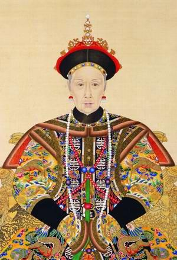

Khi vua Hàm Phong chết rồi, Đồng Trị lên ngôi thiên tử lúc còn rất ít tuổi. Từ Hi trở thành nhiếp chính cho Đồng Trị và thực sự hành sử quyền Thiên Tử. Đồng Trị chỉ nhắc lại những mệnh lệnh của Từ Hi dặn trước như một con vẹt. Khi Đồng Trị lâm triều thì Từ Hi cũng vẫn ngồi sau tấm mành trúc để phát lạc mọi công việc triều chính. Khi một ông quan quỳ gối ba lần và khấu đầu chín lần trước khi tấu trình việc nước cho vua Đồng Trị, thì từ đằng sau, Từ Hi Thái Hậu đã đọc quyết định cho Đồng Trị. Công việc của Đồng Trị chỉ nói lại những điều bà mẹ vừa nói xong.

Từ Hi rất say mê quyền hành. Bà rất sợ một ngày nào đó, con bà tới tuổi trưởng thành và lấy lại quyền Thiên Tử. Bởi vậy khi Đồng Trị vừa tới tuổi thành hôn, thì Từ Hi để tâm kén hoàng hậu và cung phi cho Đồng Trị, để Đồng Trị đam mê tửu sắc, và nhường công việc triều chính cho bà. Đồng Trị chọn Kim Cúc, một người con gái 16 tuổi nhan sắc tuyệt vời và tính tình rất cương quyết làm Hoàng Hậu. Từ Hi muốn chọn một người con gái hiền lành nhu mì làm Hoàng Hậu để dễ sai khiến, nhưng Đồng Trị rất thích Kim Cúc nên Từ Hi đành chịu, nhưng bà tuyển thêm 4 thứ phi nữa cho Đồng Trị.
Khi Đồng Trị được 17 tuổi thì chính thức nắm quyền Hoàng Đế, và Từ Hi không còn Nhiếp chính nữa. Tuy nhiên Đồng Trị là người con hiếu thảo nên vẫn nhường quyền cai trị cho mẹ, một phần vì mới lớn mà được cùng một lúc 5 cô gái thi đua lấy lòng ông vua trẻ, thì Đồng Trị còn thời giờ đâu mà lo việc nước. Đó cũng là đúng ý định của Từ Hi. Vua Đồng Trị yêu Kim Cúc, nên bất mãn Từ Hi Thái Hậu xen lấn vào việc nhân duyên của mình. Hơn nữa, một số thái giám được lệnh dụ dỗ Đồng Trị lẻn trốn ra bên ngoài Cấm Thành về ban đêm, để tìm thú chăn gối với các ca kỹ tại chốn thanh lâu kỷ viện. Cuối cùng nhà vua mắc bệnh phong tình, và chết lúc mới có 19 tuổi, sau khi ở ngôi Hoàng Đế được hai năm.
Vào lúc vua Đồng Trị chết thì hoàng hậu Kim Cúc có thai. Từ Hi rất e sợ nếu Kim Cúc sinh hoàng tử, thì hoàng tử đó sẽ làm Hoàng Đế và Kim Cúc sẽ thay thế Từ Hi làm Thái Hậu. Từ Hi nhất quyết giữ vững địa vị của mình, bằng cách bắt Kim Cúc phải chết cùng với cái bào thai kia, mặc dù thai nhi ấy là cháu nội của bà. Từ Hi gọi Kim Cúc vào và nói với Kim Cúc:
“Hoàng Đế yêu ngươi lắm, có lẽ Hoàng Đế cũng muốn ngươi đi theo đó.“
Kim Cúc biết rằng Từ Hi rất ghét mình. Nếu bà ta còn, thì mình cũng không sống được. Nàng bình tĩnh ngẩng lên nhìn vào mắt Từ Hi và trả lời “Tâu Thái Hâu, thần thiếp cũng định như thế.” Cặp mắt Kim Cúc, một người đàn bà can đảm coi thường cái chết, nhìn thẳng vào mắt Từ Hi bằng một cái nhìn lạnh lùng, u uẩn căm phẫn oán hờn khiến Từ Hi phải rùng mình kinh hãi. Đêm đó Từ Hi sai thái giám thắp đèn thật sáng, và bắt thị nữ ngồi vây chung quanh. Đến sáng thì thái giám báo cho Từ Hi biết hoàng hậu Kim Cúc đã dùng nha phiến tự tử rồi.
Lập tức Từ Hi chọn đứa con lên 4 tuổi của em gái lên ngôi vua. Từ Hi có một người em gái và đem gả cho một người em vua Hàm Phong. Triều thần nhà Mãn Thanh rất công phẫn trước âm mưu quỷ kế của Từ Hi nhưng bất lực không ngăn chận được. Đứa nhỏ 4 tuổi lên ngôi vua lấy niên hiệu là Quang Tự. Ngay sau đó mẹ ruột của Quang Tự, tức là em gái Từ Hi, đột ngột từ trần. Người đàn bà tội nghiệp có con lên ngôi báu cần phải chết, để Từ Hi tiếp tục làm Thái Hậu.
Mất mẹ, Quang Tự phải sống với một bầy thái giám. Các thái giám đã nuôi nấng dậy dỗ Quang Tự, và Quang Tự nhiễm thói quen đồng tính luyến ái của đám thái giám. Rất nhiều hoàng đế Trung Hoa mắc chứng bệnh đồng tính luyến ái chỉ vì ảnh hưởng của các hoạn quan. Từ Hi áp đảo Quang Tự đến nỗi vị tiểu Hoàng Đế này mỗi khi gặp Từ Hi đều sợ đến nỗi nói cà lăm và trở thành người nói cà lăm suốt đời. Khi Quang Tự tới tuổi 17, Từ Hi lại lo tìm hoàng hậu và cung phi cho Quang Tự. Quang Tự có một hoàng hậu và hai thứ phi, nhưng Quang Tự vừa bất lực vừa không thích đàn bà cho nên không có con.
Khi Quang Tự chính thức lên ngôi Hoàng Đế năm 1888, thì chức vụ nhiếp chính của Từ Hi chính thức chấm dứt, Từ Hi lui về Cung Điện Mùa Hạ, cách Cấm Thành vài dậm. Nhưng vua Quang Tự vốn nhu nhược, thiếu quả quyết và hay đau yếu nên thường vẫn thỉnh ý kiến của Từ Hi, và do đó Từ Hi vẫn tiếp tục cai trị. Bên ngoài, các nước Âu Châu đang gây khó khăn cho Trung Hoa, nhưng Từ Hi chỉ chăm lo củng cố quyền hành cho cá nhân mình.
Trong năm năm ở ngôi Hoàng Đế, Quang Tự thường xuyên tới Cung Điện Mùa Hạ để lấy ý kiến Thái Hậu. Nhưng bảy năm sau, Trung Hoa bị một nước nhỏ là Nhật Bản đánh bại. Đây là một biến cố kinh hoàng xúc động đến nỗi Quang Tự bỗng vùng ra khỏi tinh thần thụ động và hôn mê, và hết hẳn bịnh nói cà lăm. Phản ứng của Quang Tự trước cái nhục của một Hoàng Đế khiến Từ Hi và mọi người kinh ngạc. Quang Tự một sớm một chiều trở thành một con người khác hẳn, bừng tỉnh khỏi một cơn mê dài. Con người tội nghiệp như một hình nộm bỗng nhiên biến đổi thành một nhà cai trị can trường, nhiều sáng kiến và ăn nói lưu loát. Nhà vua bước ra khỏi thế giới mơ mộng bên trong Cấm Thành để bước vào thực tại của thế giới bên ngoài, và Quang Tự nhìn thấy tương lai của Trung Hoa.
Nhà vua ra một tuyên cáo như sau: ”Xã tắc lâm nguy. Chúng ta bị bao vây tứ phía bởi những ngoại bang hùng cường đang muốn lợi dụng tình thế yếu kém của chúng ta và liên kết với nhau để khuynh loát chúng ta. Ngoại bang biết chúng ta chểnh mảng việc binh bị và hạm đội của chúng ta nhỏ yếu. Vì thế, theo ý ta, nhu cầu ngay bây giờ là chúng ta phải cải cách và chăm lo tổ chức lại công cuộc bố phòng của chúng ta.”
Những lời nói của Quang Tự đã làm xúc động toàn thể đế quốc Trung Hoa. Giống như những hoàng đế trước, Quang Tự đã thực sự trở thành một con rồng phun lửa như các bậc tiên đế trước. Nhà vua ra lệnh thiên triều phải bãi bỏ các chủ trương tồn cổ cực đoan, các phong tục cổ hủ không thiết thực. Quang Tự tuyến cáo: “Chúng ta phải lựa chọn các môn học của Tây Phương để giúp chúng ta đuổi kịp trào lưu tiến hoá, và chăm lo học tập những môn học này để có thể đưa Trung Hoa tiến ngang với các quốc gia khác.“
Quang Tự bị ảnh hưởng của các nhà cải cách miền nam Trung Hoa, nên năm 1898 nhà vua chính thức phát động cuộc cải cách một trăm ngày. Vua Quang Tự hiệu triệu thần dân: ”Hãy nghe và tuân lệnh! Nếu Trung Hoa không cải cách, không áp dụng cuộc cách mạnh kỹ nghệ, không đi theo các phương pháp mà người Nhật bắt chước người ngoại quốc, thì thiên triều một ngày nào đó sẽ tan rã và người Trung Hoa sẽ không ngẩng mặt lên được với thế giới.”
Trong nhiều thế kỷ, Trung Hoa đã từng là một quốc gia Á Châu khổng lồ, kiêu căng trịch thượng, bắt nạt những láng giềng nhỏ như Việt Nam, Miến Điện, Thái Lan, Tây Tạng, Mông Cổ và Triều Tiên. Các nước nhỏ này phải triều cống hàng năm. Bây giờ đến lượt Trung Hoa nếm mùi vị nhục nhã bị bắt nạt. Một đại thần đã trình bày với vua Quang Tự: ”Nếu chúng ta đi đự hoà hội với các quốc gia khác mà không có sức mạnh hậu thuẫn cho lời nói của chúng ta, thì chúng ta chỉ làm trò cười cho thiên hạ. Nếu các quốc gia mạnh ngang nhau thì luật lệ quốc tế mới được tôn trọng; nếu không thì mọi điều ước không thể thi hành được.” Lần đầu tiên trong lịch sử mấy ngàn năm, Trung Hoa phải nhận thức rằng Trung Hoa chỉ là một hành tinh như các quốc gia khác, chứ không phải là mặt trời khiến các quốc gia khác phải quay chung quanh như trước nữa. Chính Nhật Bản và các quốc gia tây phương đã dạy cho Trung Hoa bài học về sự thực đau lòng này.
Những đạo dụ về cải cách tuôn ra như bươm bướm từ cung vua Quang Tự. “Thần dân hãy nghe và tuân hành, hãy mua đủ loại máy móc. Hãy gíáo dục quần chúng. Hãy sáng chế các đồ thực dụng. Hãy bỏ thời giờ để luyện tập làm binh lính. Hãy thiết lập những viện đại học để đưa quốc gia ngang hàng với tây phương.”
Các toà án được lệnh phải xử các vụ án cho xong để tránh tình trạng ứ đọng và hệ thống pháp luật cũng được cải cách. Về vấn đề ngân hàng, các viên chức phải theo đường lối ngân sách của tây phương. Hệ thống thư lại được cải tổ. Các viên chức Mãn Châu lười biếng bị cách chức, các chức vụ không cần thiết bị bãi bỏ.
Thoạt đầu các nghị quyết của vua Quang Tự được các thân vương, tướng lãnh và đại thần tán thành, vì mọi người hoảng sợ trước chiến thắng quân sự của Nhật Bản và nghĩ rằng Trung Hoa cũng phải tiến bộ như Nhật Bản. Nhật Bản đã gây chấn động tại Trung Hoa hơn tất cả các nước tây phương khác vì người Trung Hoa vốn coi thường Nhật Bản; Nhật Bản từng chịu ảnh hưởng văn hoá của Trung Hoa từ hàng ngàn năm. Tất cả những gì người Nhật Bản làm được thì người Trung Hoa có thể làm hay hơn. Người Trung Hoa chỉ nể sợ người tây phương thôi, nay Nhật Bản hùng mạnh không kém các nước tây phương là điều làm người Trung Hoa kinh ngạc nhất.
Nhưng các đạo luật cải cách của vua Quang Tự dần dần gặp khó khăn, vì sự chống đối của các thân vương và các đại thần. Họ trông thấy các cải cách có thể tước bỏ rất nhiều các nguồn lợi về tài sản và quyền hành của họ. Vua Quang Tự đã tấn công ngay chính vào các định chế lâu đời của Trung Hoa. Sự thay đổi nào cũng gây bất lợi cho giai cấp đang được ưu đãi, đang được hưởng thụ. Lập tức các thân vương và quan đại thần lũ lượt kéo đến Cung Điện Mùa Hạ để than phiền với Từ Hi Thái Hậu. Họ khẩn cầu Thái Hậu hãy cứu vớt Thiên Triều trước những cải cách của vua Quang Tự mà họ coi là ”những cải cách điên rồ.“ Do đó chính giới Trung Hoa chia ra làm hai phe, một bên là vua Quang Tự và các học giả cải cách, và một bên là Từ Hi Thái Hậu cùng với phe bảo thủ.
Vua Quang Tự cũng nhận thấy mối nguy hiểm của mình, nhưng nhà vua coi thường bà dì ruột của mình là Từ Hi Thái Hậu. Nhà vua biết rằng sự thành công của công cuộc cải cách tùy thuộc và việc loại trừ Từ Hi ra khỏi chính trường vĩnh viễn. Một cuộc tranh giành quyền hành quyết liệt giữa hai dì cháu đã xảy ra trong cung cấm. Vua Quang Tự ra tay trước và bổ nhiệm Viên Thế Khải vào chức Thanh Tra Quân Đội Miền Bắc đang do Vinh Lộc chỉ huy. Vua Quang Tự rất e ngại Vinh Lộc vì Vinh Lộc là người rất trung thành với Từ Hi. Viên Thế Khải vốn vẫn ủng hộ chủ trương cải cách của vua Quang Tự.
Trong một cuộc hội kiến bí mật tại Điện Thái Hòa, vua Quang Tự chỉ thị cho Viên Thế Khải phải tới tổng hành dinh của Vinh Lộc tại Thiên Tân, và loại trừ Vinh Lộc. Nếu diệt được Vinh Lộc thì vua Quang Tự diệt được hậu thuẫn sức mạnh quân sự của Từ Hi. Đồng thời vua Quang Tự cũng cho Viên Thế Khải quyền bao vây Cung Điện Mùa Hạ và phong tỏa Từ Hi bên trong cung điện, không cho liên lạc với bên ngoài.
Kế hoạch của vua Quang Tự rất tinh vi và chu đáo, và nếu được người thân tín thi hành thì vua Quang Tự có cơ trở thành một vị Hoàng Đế danh tiếng của nhà Mãn Thanh, phục hồi được cả ngai vàng Mãn Thanh và đưa Trung Hoa ra khỏi cảnh tủi nhục. Nhưng nhà vua chọn lầm người. Viên Thế Khải là một người nham hiểm và nhiều tham vọng. Viên Thế Khải vốn là người Hán chứ không phải là người Mãn Châu. Họ Viên nhận thấy khí thế nhà Thanh đã mãn và thiên mệnh không còn thuộc về nhà Thanh nữa, và mơ ước đứng lên tạo lập một triều đại mới, như vẫn thường xảy ra trong lịch sử Trung Hoa.
Sau khi hội kiến với vua Quang Tự, Viên Thế Khải đi thẳng tới Thiên Tân, phản lại kế hoạch bí mật của nhà vua. Viên Thế Khải cho Vinh Lộc biết hắn được lệnh bao vây Cung Điện Mùa Hạ và hành thích Từ Hi Thái Hậu. Vinh Lộc cực kỳ hoảng hốt, vội tiến quân về đứng cạnh Từ Hi. Bà Thái Hậu nổi cơn thịnh nộ và lập tức ra lệnh cho Vinh Lộc tiến quân về Cấm thành. Ngay đêm đó, vào lúc ba giờ sáng, khi các thái giám canh gác trông thấy hỏa pháo nổ tại Cung Điện Mùa Hạ và báo cho vua Quang Tự, thì vua Quang Tự biết mình đã thất bại.
Quang Tự vốn sợ Từ Hi từ nhỏ nên bây giờ người run lập cập. Chí khi nam nhi mà nhà vua tạo cho mình bấy lâu nay bỗng biến mất, để trở thành một con người nhát sợ như trước. Khi cánh quân cấm vệ đầu tiên tiến vào cửa cung thì vua Quang Tự chạy ra phủ phục ngay trước kiệu của Từ Hi. Từ Hi nhìn vua Quang Tự mà không thèm nói một lời. Mãi tới lúc vào Điện Thái Hòa, Từ Hi mới tuôn ra cơn giận dữ. Bà hét lên: “Quân vong ân bội nghĩa, ta nuôi ngươi như con ta, và đây là cách ngươi đền ơn ta phải không?”
Tổng thái giám Lý Liên Anh chứng kiến cảnh nhục nhã của vua Quang Tự một cách hả hê. Vua Quang Tự chỉ biết năn nỉ: “Hài nhi quá đỗi nhu nhược. Hài nhi không xứng đáng ở ngôi vị chí tôn nữa. Xin Thái Hậu cứ trừng phạt hài nhi thật đích đáng.”
Từ Hi hét lanh lảnh: ”Hãy viết ngự chiếu thoái vị ngay bây giờ và ngay tại đây.”
Về sau vua Quang Tự kể lại: “Ta không còn biết nói gì nữa. Ta ra lệnh cho Viên Thế Khải đem quân bao vây Cung Điện Mùa Hạ cho tới khi nào các đạo dụ cải cách của ta có hiệu lực. Hành động này của ta thật đáng bị trừng phạt.”
Phản ứng đầu tiên của Từ Hi là muốn đem chặt đầu vua Quang Tự ngay tức khắc. Nhưng việc chém đầu một hoàng đế có thể đưa tới một hậu quả nguy hiểm. Vì thế bà định cho công bố ngư chiếu thoái vị của vua Quang Tự và tìm một ấu chúa khác và bà lại tiếp tục nắm quyền thiên tử trong chức vụ nhiếp chính. Nhưng Từ Hi cũng sợ rằng vị ấu chúa ấy rồi ra thì cũng đi theo con đường độc lập của vua Quang Tự. Cuối cùng Từ Hi để cho vua Quang Tự tiếp tục giữ chức Hoàng Đế, nhưng giam nhà vua vào Doanh Đài, và chỉ cung cấp cho nhà vua một đời sống vật chất kham khổ, lúc nào cũng bị canh gác nghiêm mật, và có một thái giám theo sát nhà vua ngày cũng như đêm.
Bị giam vào Doanh Đài thì chẳng khác nào là đi đầy. Doanh Đài là một hòn đảo nhân tạo trong một cái hồ nhân tạo bên trong Cấm Thành, chỉ cách ngai vàng cũ của nhà vua chừng 15 phút đi bộ. Một số nhà cải cách của vua Quang Tự phải đào tẩu. Khang Hữu Vy trốn qua Hương Cảng, Lương Khải Siêu và Tôn Văn trốn sang nhật Bản, gia nhập hàng ngũ những nhà cách mạng tại đây. Riêng Đàm Tự Đồng khẳng khái không chịu chạy trốn, nguyện đem máu mình tưới cho mầm cách mạnh và bị giết lúc 33 tuổi, cùng với năm đồng chí nữa là: Lưu Quang Đệ, Lâm Húc, Dương Nhuệ, Dương Thâm Tú, và Khang Quảng Nhân (em Khang Hữu Vy). Người thời đó gọi sáu nhà cải cách bị tử hình này là” Lục Quân Tử”.
Nhiều người khác cũng bị bắt, bị tra tấn dã man và bị chém đầu. Họ bị hành hình ngay tại pháp trường giữa Bắc Kinh. Từ những cái thây không đầu, máu đổ chảy thành sông. Gia đình các nạn nhân không được phép khâu đầu liền với thân thể trước khi đem chôn như trước kia. Cuộc Cải Cách Một Trăm Ngày của vua Quang Tự chấm dứt trong sự kinh hoàng.
Cuộc đảo chánh thất bại của vua Quang Tự và cuộc đảo chánh ngược của Từ Hi xảy ra giữa mùa hè năm 1895, sau khi Trung Hoa đã bị Nhật Bản đánh bại nhục nhã. Từ Hi giữ việc triều chính dưới danh hiệu vua Quang Tự. Ngày 21 tháng 9 năm 1895, Từ Hi tuyên cáo rằng quốc gia đang lâm nguy nên cần phải có sự lãnh đạo khôn ngoan, và vua Quang Tự đã khẩn nài Từ Hi đứng ra cầm quyền cai trị, vì Từ Hi Thái Hậu đã hai lần hành xử quyền nhiếp chính một cách hoàn hảo. Bản tuyên cáo này do chính Từ Hi thảo ra và có long ấn của vua Quang Tự với dòng chữ: “Thái Hậu đã chấp nhận lời cầu nguyện của ta.” Thế là Từ Hi Thái Hậu lại nắm quyền nhiếp chính lần thứ ba. Một lần nữa, bà lại nắm vận mệnh của cả một triều đại, một đế quốc đang hồi suy tàn.
Với phe bảo thủ hậu thuẫn chung quanh, Từ Hi bắt đầu công cuộc đưổi giống ”Bạch Quỷ” ra khỏi Trung Hoa. Kết quả đưa tới loạn Quyền Phỉ. Đây không phải là một cuộc nổi loạn chống chính quyền, mà là một cuộc nổi loạn chống lại người ngoại quốc và những người chủ trương cải cách. Khi loạn Quyền Phỉ bộc phát năm 1900 thì các nhà truyền giáo ngọai quốc tại Trung Hoa là nạn nhận chính. Khoảng 200 nhà truyền giáo và 20 ngàn người Trung Hoa theo đạo Thiên Chúa bị Quyền Phỉ giết rất dã man. Một cảnh tàn sát diễn ra tại Tuy Viễn được ghi lại như sau:
“Hôm đó cuộc hành quyết bắt đầu với mục sư Farthing thuộc dòng Baptist. Mục sư Farthing được dẫn lên trước. Bà vợ hoảng sợ nắm chặt lấy ông ta, nhưng mục sư nhẹ nhàng gỡ tay vợ và đẩy vợ lui lại, rồi bước thẳng tới trước người đao phủ thủ và quỳ xuống. Một nhát dao vung lên và đầu ông ta rụng xuống. Kế đó là các mục sư khác, tất cả đều bị chặt đầu.
“Viên quan điều khiển cuộc hành quyết thấy công việc tiến hành chậm chạp quá, nên ra lệnh các binh sĩ khác cũng phải vung kiếm tiếp tay với các đao phủ thủ, vì số nạn nhân quá đông đảo. Khi đàn ông bị chặt đầu xong thì tới lượt các bà. Bà Farthing ôm chặt hai đứa con, và binh sĩ giằng hai đứa bé đó ra, rồi một lưỡi kiếm lóe lên và đầu bà văng đi. Các đao phủ tiếp tục tới các trẻ con. Nghệ thuật chém đầu của các đao phủ thủ thật là điêu luyện. Chỉ một nhát là xong một nạn nhân. Tuy nhiên có một số đao phủ thủ hơi vụng về, phải vài nhát mới làm xong nhiệm vụ khiến nạn nhận bị đau đớn vô cùng.
“Bà mục sư Lovitt đeo kính, tay nắm chặt đứa con và nói với viên quan nhà Thanh: “Chúng tôi tới Trung Hoa để đem Tin Lành cho các ông về Chúa Cứu Thế, chúng tôi không làm điều gì hại, mà chỉ làm điều tốt, tại sao các ông đối xử với chúng tôi như thế này?” Một tên lính tiến lại, lột kính bà ra và hắn phải chém hai nhát mới chặt đứt được cổ bà Lovitt. Lúc chết rồi, tay bà Lovitt vẫn nắm chặt tay đứa con của bà.
“Khi các mục sư Tin Lành tử đạo xong thì tới các linh mục công giáo. Vị giám mục được dẫn ra trước. Vị giám mục đã quá già, râu tóc bạc phơ. Ngài hỏi viên quan giám trảm tại sao ông ta hành động tàn ác như thế. Viên quan trả lời vị giám mục bằng một nhát chém chéo ngang mặt. Máu nhuộm đỏ ối bộ râu bạc của vị giám mục già và ngài gục xuống chết ngay. Sau đó là các linh mục và các nữ tu, tất cả đều chịu chung hình phạt chặt đầu.
“Ngày hôm đó tất cả 45 giáo sĩ Tây phương bị hành quyết cùng với một số đông người Trung Hoa theo đao Thiên Chúa. Xác của các nạn nhân để mặc nằm tại bãi hành quyết suốt đêm đó vì mãi đến tối cuộc hành quyết mới chấm dứt. Trong đêm đó, tất cả các xác đều bị lột hết quần áo và những gì quý giá đeo trên người. Ngày hôm sau tất cả xác được chôn tập thể, trừ một vài cái đầu được đem đóng lên cổng thành làm gương cho công chúng.”
Quan quân nhà Thanh không khỏi kinh ngạc và cảm phục e sợ trước sự can đảm của gia đình các nhà truyền giáo Tây phương. Trừ một vài sự run rẩy ở phía các bà, và các bàn tay trẻ con nắm chặt váy mẹ, không một ai khóc lóc, kêu than hoặc van xin tha chết. Tất cả các nạn nhân bình thản chấp nhận cái chết thảm khốc dưới đao kiếm của quan quân nhà Thanh. Các vụ hành quyết giáo sĩ tại Trung Hoa đã gây phẫn nộ tại Tây Phương. Sáu quốc gia phái quân đội đến trả thù, một cuộc trả thù rất đắt giá cho người Trung Hoa. Huân tước Alfred von Waldersee, chỉ huy quân đội Đức, ra lệnh cho quân sĩ dưới quyền:
“Khi các người gặp quân Trung Hoa, các người phải đánh bại chúng. Không một kẻ nào được tha, không được bắt làm tù binh mà phải giết hết. Tất cả những kẻ nào rơi vào tay các người, các người mặc tình chém giết. Cũng như người Hung Nô cách đây một ngàn năm dưới quyền Atila đã tạo được danh tiếng khủng khiếp còn lưu truyền cho tới ngày hôm nay, thì bây giờ các người có nhiệm vụ làm cho Đức quốc cũng được kinh sợ như vậy tại Trung Hoa, và từ nay người Trung Hoa sẽ không dám nhìn thẳng vào mắt người Đức.”
Sau đó là một cuộc tàn sát trả thù vô cùng khủng khiếp, và một sự tàn phá kinh hồn, biến cung điện thành những đống gạch vụn vĩ đại. Quân Nga chặt đầu tất cả đàn ông, đàn bà và con nít cả một vùng và liệng xác xuống sông Hắc Long Giang. Loạn Quyền Phỉ tan rã. Từ Hi thái hậu và vua Quang Tự phải bỏ kinh thành mà chạy. Sau đó Trung Hoa phải ký thêm rất nhiều nhượng bộ lớn cho tây Phương.
Từ Hi cũng tỏ ra là một chính khách khôn khéo. Bà lập tức nương theo khuynh hướng cải cách và tối tân hóa Trung Hoa. Từ Hi ra lệnh cấm xử tử tội bằng hình phạt tùng xẻo, nghĩa là lóc thịt nạn nhân thành hàng ngàn miếng cho đến chết. Bà cũng ra lệnh cấm hút thuốc phiện. Các nước Tây Phương cùng với Nhật Bản tận tình khai thác việc buôn bán thuốc phiện tại Trung Hoa, và người Trung Hoa dần dần mất hết mọi năng lực của ý chí. Năm 1906, luật cấm thuốc phiện của Từ Hi bắt buộc việc buôn bán và dùng thuốc phiện phải chấm dứt trong thời hạn mười năm. Nhiều người Trung Hoa đã bị chặt đầu về tội hút thuốc phiện.
Từ Hi cũng ra nhiều đạo dụ chấm dứt sự chênh lệch về quyền lợi giữa người Mãn Châu và người Hán. Trước kia người Mãn Châu được hưởng nhiều ưu đãi hơn người Hán. Bây giờ việc kết hôn giữa hai giống dân được coi là hợp pháp, tuy nhiên người Mãn Châu thuộc dòng dõi quý tộc vẫn không được lấy vợ là người Hán. Tỷ lệ viên chức người Mãn Châu cũng bị bãi bỏ. Trước kia người Mãn Châu tuy ít, chỉ là 1% dân số, nhưng được chiếm một nửa các chức vụ trong chính phủ. Mãn Châu là một vùng trước kia dành riêng cho người Mãn Châu, nay cho phép người Hán được tới định cư. Chẳng bao lâu nhờ công khai phá của người Hán, Mãn Châu trở thành một vựa lúa quan trọng của Trung Hoa.
Nhiều trường kỹ thuật theo kiểu mẫu Tây phương và Nhật Bản được mở ra dậy nghề cho thanh niên. Đàn bà Trung Hoa được khuyến khích không nên bó chân như trước, nhưng nhiều người Trung Hoa vẫn thích bó chân cho con gái, biến người con gái lành lặn thành những người tàn tật theo một tập tục lâu đời, và cũng để phân biệt đàn bà Trung Hoa với đàn bà Mãn Châu.
Vào ngày sinh nhật năm 1906 của Từ Hi, bà hứa với quần chúng sẽ đặt ra một hiến pháp và phác họa ra một Kế Họach Chín Năm để thành lập một chính phủ đại diện cho dân chúng. Đây là một dấu hiệu tiến bộ rõ rệt vì chỉ mười năn trước, kẻ nào đề nghị một điều như thế thì đã bị chém đầu rồi.
Trong lúc Từ Hi vẫn giữ quyền nhiếp chính thì con gái Vinh Lộc kết hôn với Thuần Thân Vương. Thuần Thân Vương là cháu Từ Hi và là em của vua Quang Tự. Năm 1906 vợ Thuần Thân Vương sinh được một con trai và đặt tên là Phổ Nghi. Từ Hi bây giờ cũng già rồi và không thể nắm quyền nhiếp chính mãi. Từ Hi cũng không muốn vua Quang Tự trở lại ngôi vị thiên tử. Bà cần phải tìm một ấu chúa khác để thay thế vua Quang Tự, và Phổ Nghi chính là người bà đang tìm kiếm.